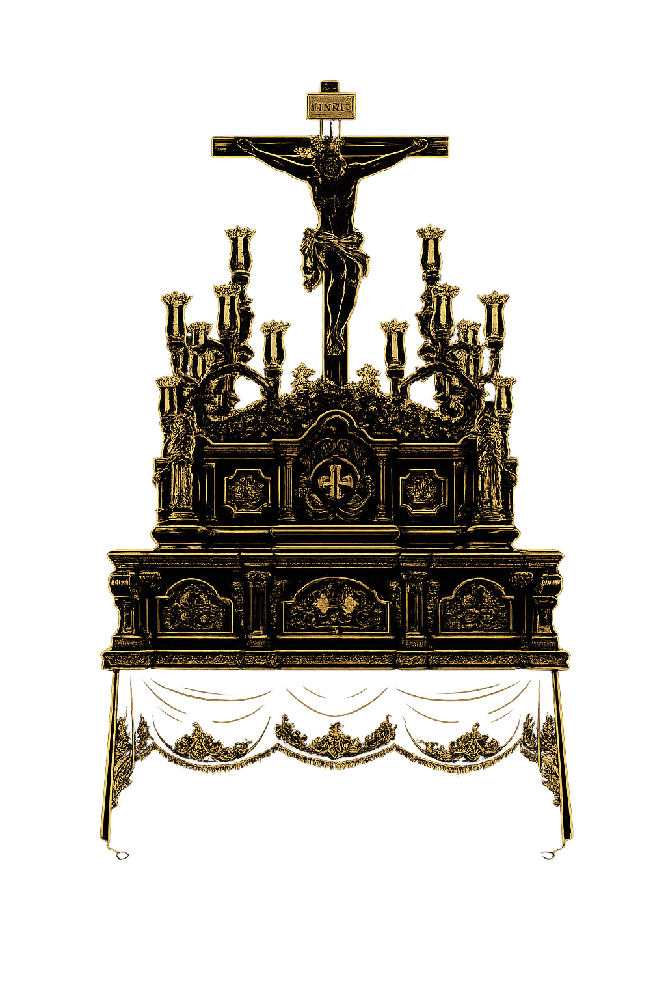

Hermandad
del Barrio
Stmo. Cristo de la Reconciliación y Paz
y Nuestra Señora de los Dolores
Medina Sidonia · Cádiz
Desde 1975
Descubrir
Stmo. Cristo de la Reconciliación y Paz
y Nuestra Señora de los Dolores
Medina Sidonia · Cádiz
Desde 1975
Comunicados, crónicas y novedades de la Hermandad del Barrio
Un recorrido por los momentos más significativos de la Hermandad del Barrio
Un grupo de devotos del Barrio funda la Hermandad con el objetivo de rendir culto al Santísimo Cristo de la Reconciliación y Paz y a Nuestra Señora de los Dolores, fomentando la vida cristiana y la caridad.
La Hermandad realiza su primera salida procesional por las calles de Medina Sidonia, consolidándose como una nueva realidad cofrade en la ciudad.
Por primera vez el Cristo y la Virgen procesionan juntos, dejando una imagen imborrable en la memoria de los hermanos y vecinos.
La corporación experimenta un importante aumento de hermanos y comienza la ampliación de su patrimonio artístico y procesional.
Se culmina una importante restauración del paso procesional, recuperando elementos originales y mejorando su conservación para las futuras generaciones.
La Hermandad inicia una nueva etapa de mejoras en enseres, cultos y formación de los hermanos, mirando al futuro con renovada ilusión.
Nuestra Señora de los Dolores estrena una nueva pieza bordada, fruto del esfuerzo y la devoción de toda la Hermandad.
Se celebran diversos cultos extraordinarios y actos conmemorativos para recordar los cuarenta años de historia de la corporación.
Aunque la salida procesional no puede realizarse, la Hermandad mantiene el culto, la asistencia social y el acompañamiento espiritual a sus hermanos durante la pandemia.
La Hermandad celebra medio siglo de historia con cultos extraordinarios, actos culturales y una Salida Extraordinaria con el acompañamiento de la banda de cornetas y tambores del Stmo. Cristo de las Tres Caídas, que marca un hito en la historia de Medina Sidonia.
El Santísimo Cristo de la Reconciliación y Paz y Nuestra Señora de los Dolores, razón de ser de nuestra Hermandad
"Pulsa sobre cada imagen para conocer su historia"
Pulsa en cada punto del paso para descubrir su nombre, función e historia

Pulsa en cualquier punto numerado para conocer el elemento
El patrimonio artístico e histórico de la Hermandad, custodiado y documentado para generaciones futuras
Orfebrería
Bordados
Insignias
Ajuar Virgen
Orfebrería
Bordados
Documentos
Fotografías
El mejor patrimonio de esta Hermandad no es el que se porta en andas, sino el que camina detrás: el hermano que da su corazón al Barrio.
Momentos únicos de cultos, salidas, estrenos y vida cofrade
@hermandad_del_barrio
#HermandadDelBarrio · #MedinaSidonia · #SemanaSanta
Cultos, cabildos, convivencias y toda la actividad de la Hermandad
Culto
08:00 h · Parroquia San Juan de Dios, Medina Sidonia
Cabildo
19:30 h · Sede de la Hermandad
Convivencia
13:00 h · Recinto habitual del Barrio
Función
12:00 h · Parroquia San Juan de Dios · Medina Sidonia
Triduo
20:00 h · 3 días consecutivos · Parroquia San Juan de Dios
Culto
18:30 h · Parroquia San Juan de Dios · Medina Sidonia
● Día con acto programado
Mapa del itinerario y puntos destacados de la salida procesional por las calles de Medina Sidonia
Salida — Parroquia San Juan de Dios
Punto de inicio de la procesión
20:00 h aprox.
Plaza del Punto
Parada emotiva con levantá especial
20:45 h aprox.
Balcón de la Bahía
Vista panorámica, momento de gran belleza
21:30 h aprox.
Plaza de España
Punto álgido del recorrido
22:15 h aprox.
Entrada — Parroquia San Juan de Dios
Conclusión de la estación de penitencia
24:00 h aprox.
Los horarios son orientativos. Consulta la programación oficial cada año.
Si sientes devoción al Santísimo Cristo de la Reconciliación y Paz y a Nuestra Señora de los Dolores, y quieres formar parte de nuestra familia cofrade, te invitamos a hacerte hermano. Abre tu corazón al Barrio.